| PHRYGANA | Fauna | Flora | Galles | liste des espèces |
contact -
info - commentaires phrygana1 (at) gmail.com |
| Particularités crétoises | nouveautés | Mines | ressources naturelles |
| Lupinus pilosus L. |
| 163 | Flora | FABACEAE | Genisteae | Lupinus L. |
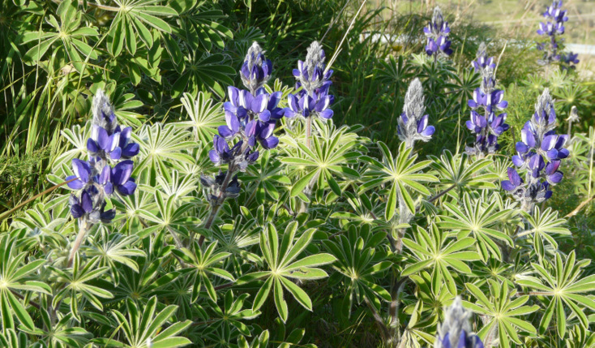 Lupinus pilosus Melambes 25 février 2010 |
| Blue lupine -- Λούπινο ο τριχωτóς | |
| Plante poilue | |
| Feuilles: composées-digitées à 9 - 11 folioles, les folioles larges de 6 - 9 mm, lancéolées, poilues, elliptiques-oblongues; stipules bifides à la pointe. | |
| Tige: poilue. | |
| Fleurs: groupées en grappes serrées (50 à 100 mm). Couronne longue de 15 à 17 mm, bleue vif avec des taches blanches ou bleu purpurin; pédicelle long de 10 à 40 mm | |
| Fruit: une gousse assez épaisse, longue de 40 - 50 mm, large de 18 à 20 mm; graines un peu verruqueuses, brun foncé rougeâtre | |
| Hauteur: 40 - 80 cm | Type biologique: thérophyte ramifié |
| Floraison: février mars avril | |
| Altitudes: 0 - 750 m | |
| Statut en Crète: indigène, parfois cultivé | |
| Biotopes en Crète: olivaies, champs et terrasses abandonnées, phrygana, terrains sablonneux. | |
| Distribution: région Méditerranéenne orientale (Grèce, Turquie, Liban, Syrie, Jordanie, Israel) | |
| Espèce héliophile. | |
|
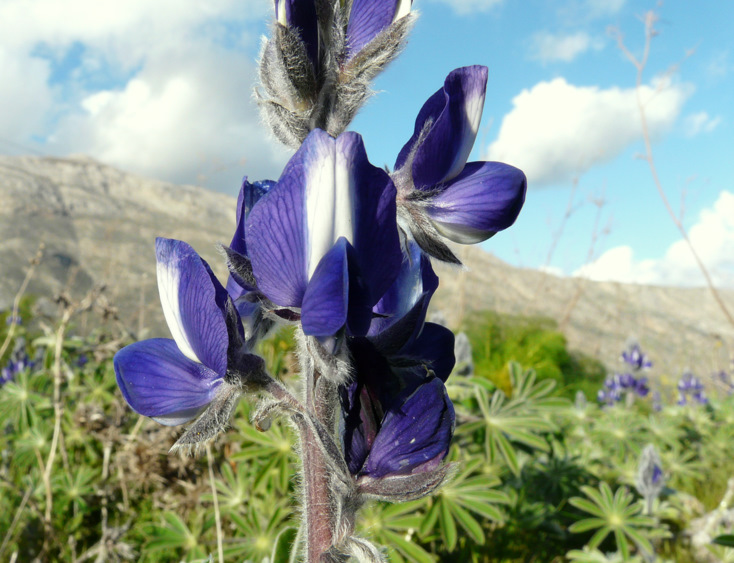 Lupinus pilosus Melambes 25 février 2010 |
|
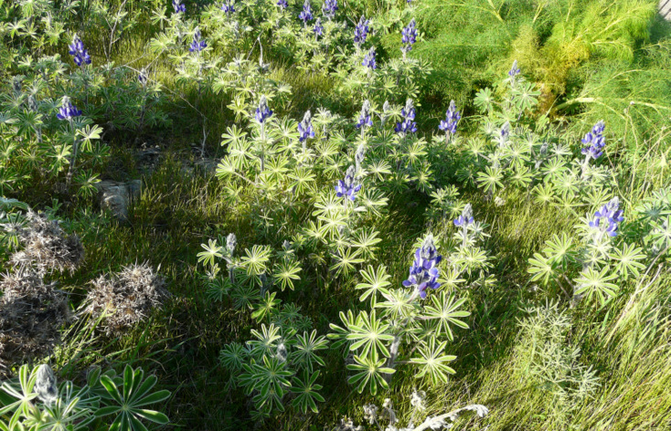 Lupinus pilosus Melambes 25 février 2010 |
|
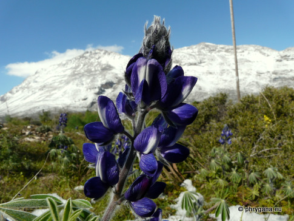
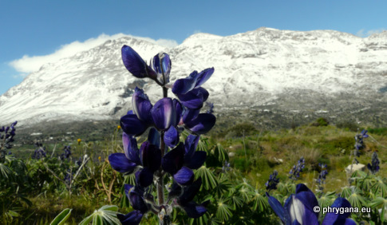 Lupinus pilosus Melambes 10 mars 2011 |
|
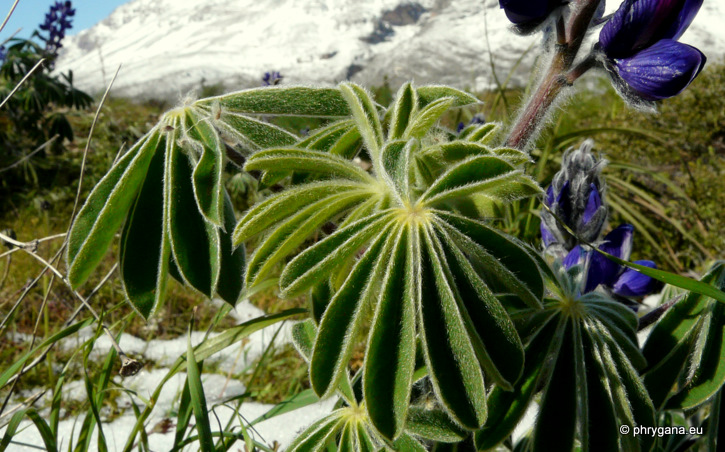 Lupinus pilosus Melambes 10 mars 2011 |
|
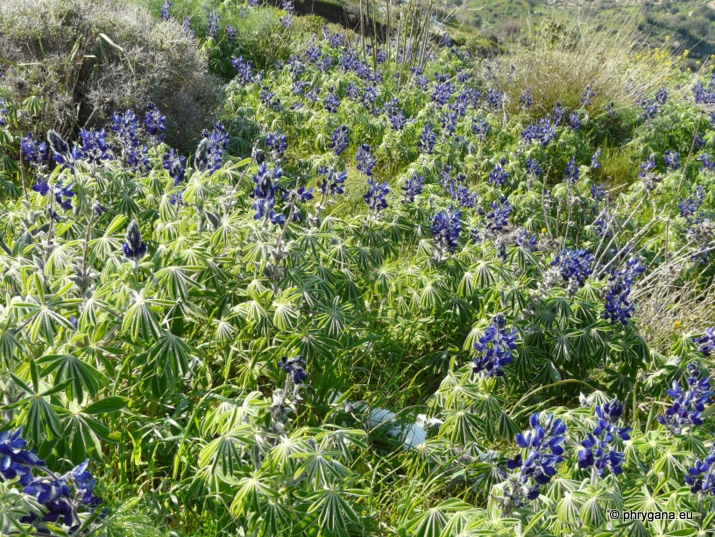 Lupinus pilosus Melambes 10 mars 2011 |
|
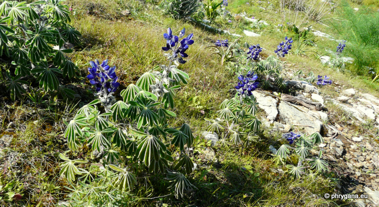 Lupinus pilosus Melambes 10 mars 2011 |
|
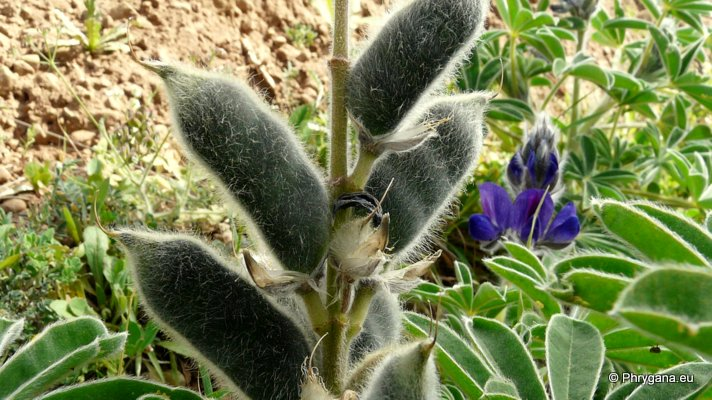 Lupinus pilosus Agios Giorgos - vallée haute (Melambes) 14 mars 2010 |
|
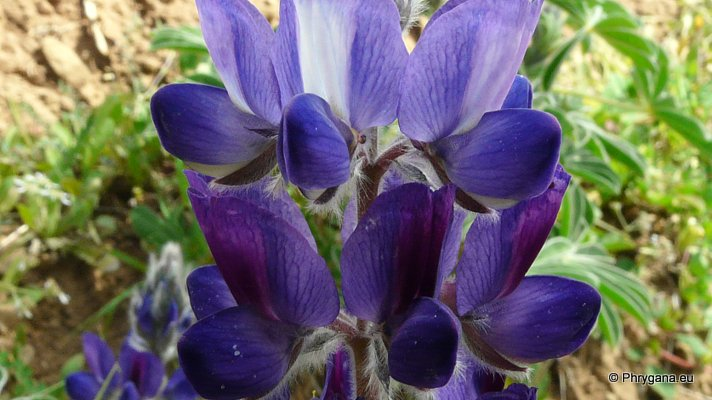 Lupinus pilosus Agios Giorgos - vallée haute (Melambes) 14 mars 2010 |
|
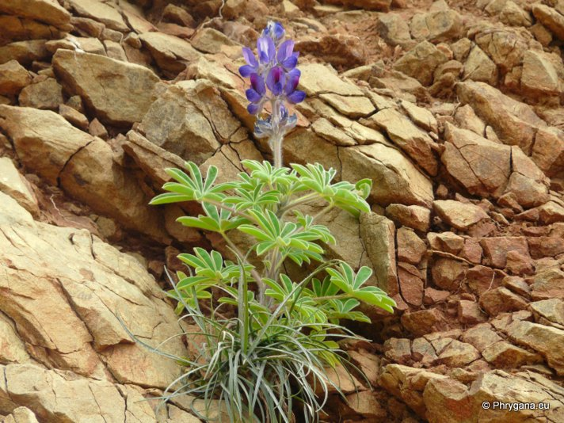 Lupinus pilosus Agios Giorgos - vallée haute (Melambes) 14 mars 2010 |
| 07 février 2013 |
| © paul fontaine -- © Phrygana.eu 2007 -- 2013 |